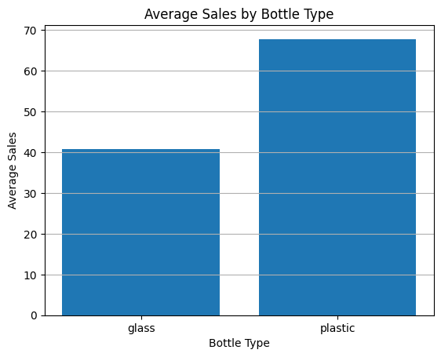
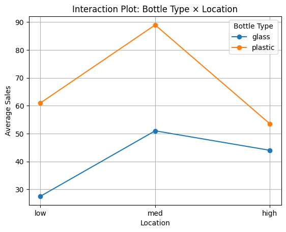

10.0 מאיפה באנו ולאן אנחנו הולכים
הגענו ליחידה האחרונה — כל הכבוד על הדרך! 🎓 ביחידות 8–9 השווינו קבוצות לפי גורם אחד (שיטת הוראה). אבל העולם האמיתי מורכב יותר: מכירות תלויות גם בסוג האריזה וגם במיקום במדף; יבול תלוי גם בזן הצמח וגם בסוג הדשן. היום נשווה קבוצות לפי שני גורמים בו-זמנית — וזה יפתח לנו רעיון חדש ויפהפה שאין לו מקבילה בעולם הגורם היחיד: אינטראקציה.
ואולי כבר יש לך תחושה מוכרת. את המילה "אינטראקציה" פגשנו ביחידה 6, ברגרסיה: שם ראינו שאיבר \(X_1\cdot X_2\) גורם לכך שההשפעה של משתנה אחד תלויה בערך של השני, ושבגרף זה מתבטא בקווים לא-מקבילים. אותו רעיון בדיוק חוזר כאן — רק שהפעם שני הגורמים קטגוריים. וזה הגיוני: הרי גילינו כבר ב-8.1 ש-ANOVA היא בעצם רגרסיה במסווה.
10.1 שני גורמים במקום אחד: דוגמת בקבוקי הקולה
הדוגמה שתלווה אותנו לאורך היחידה (ישר מההרצאה): חברת משקאות בודקת מה משפיע על מכירות קולה. שני גורמים נבדקים יחד:
- גורם A — סוג הבקבוק: זכוכית / פלסטיק (2 רמות, נסמן \(a=2\)).
- גורם B — מיקום במדף: נמוך / אמצעי / גבוה — low / med / high (3 רמות, \(b=3\)).
2 × 3 = 6 תאים (צירופים), ובכל תא 2 חנויות שנמדדו — סה"כ 12 תצפיות. עכשיו, במקום שאלה אחת, יש לנו שלוש שאלות נפרדות:
| השאלה | נקראת | בשפה יומיומית |
|---|---|---|
| האם סוג הבקבוק משפיע על המכירות (בממוצע על פני כל המדפים)? | אפקט ראשי של A | "פלסטיק מוכר יותר מזכוכית?" |
| האם המיקום משפיע (בממוצע על פני שני הבקבוקים)? | אפקט ראשי של B | "מדף אמצעי מוכר יותר?" |
| האם ההשפעה של גורם אחד תלויה ברמת השני? | אינטראקציה A×B | "הפלסטיק מרוויח מהמדף האמצעי יותר מהזכוכית?" |

10.2 המודל ושלוש משפחות ההשערות
המודל מרחיב את זה של יחידה 8 באיבר אחד חדש — איבר האינטראקציה:
וכל אפקט מקבל משפחת השערות משלו — שלושה מבחני F נפרדים באותה טבלה:
🔎 בונוס: איך בכלל אומדים את \(\alpha_i\) שאף פעם לא רואים ישירות?
האפקט של רמה מסוימת לא נצפה כמספר בנתונים — הוא נאמד: \(\hat{\alpha}_i = \bar{Y}_{i\cdot\cdot} - \bar{Y}_{\cdot\cdot\cdot}\), כלומר הממוצע השולי של הרמה פחות הממוצע הכללי. הנקודות בסימון \(\bar{Y}_{i\cdot\cdot}\) אומרות "מיצענו על כל מה שבמקום הנקודה" — כאן, על כל רמות B ועל כל התצפיות. דוגמה מהקולה: הפלסטיק \(\hat{\alpha}_{\text{plastic}} = 67.83 - 54.33 = +13.5\) — הפלסטיק מוכר בממוצע 13.5 יחידות מעל הממוצע הכללי. וכדי שהאפקטים יהיו מוגדרים היטב, מטילים אילוץ זיהוי (Sum-to-Zero): \(\sum_i \alpha_i = 0\) — האפקטים מתאזנים סביב 0 (הזכוכית −13.5, הפלסטיק +13.5).
10.3 הכוכבת: אינטראקציה — וכלל הקווים המקבילים
זה הרעיון החדש של היחידה, אז נעצור עליו. אינטראקציה = ההשפעה של גורם אחד תלויה ברמה של הגורם השני. בקולה: אם הפלסטיק מוכר יותר מזכוכית ב-אותה מידה בכל שלושת המדפים — אין אינטראקציה, שני הגורמים "עובדים בנפרד". אבל אם הפלסטיק מרוויח מהמדף האמצעי הרבה יותר מהזכוכית — ההשפעות שזורות זו בזו, יש אינטראקציה.
קווים מקבילים ⇐ אין אינטראקציה (הפער בין הקווים קבוע — ההשפעה של גורם אחד זהה בכל רמות השני).
קווים לא-מקבילים / מצטלבים ⇐ יש אינטראקציה (הפער משתנה — ההשפעה תלויה ברמה).
בדיוק כמו במניפת הרגרסיה מיחידה 6, רק שכאן הצירים קטגוריים.
הכי טוב לראות את זה בעיניים. במעבדה למטה: גרור את "עוצמת האינטראקציה" מ-0 (עולם אדיטיבי, קווים מקבילים) עד לדוגמת הקולה האמיתית ומעבר — וצפה בטבלת ה-ANOVA משתנה בזמן אמת. שים לב במיוחד: ה-SS של האפקטים הראשיים (A ו-B) כמעט לא זזים — רק ה-SS של האינטראקציה גדל.

10.4 פירוק השונות — עכשיו לארבעה חלקים
אותו רעיון מיחידה 8, מוכלל: כל הפיזור מתפרק — אבל הפעם לארבעה חלקים במקום שניים, כי יש שני אפקטים ראשיים ועוד אינטראקציה:
שני האפקטים הראשיים מחושבים בדיוק כמו ה-SSB של יחידה 8 (סטיית ממוצע שולי מהממוצע הכללי, משוקללת). החדש הוא ה-SS של האינטראקציה, ויש לו אינטואיציה יפהפייה:
10.5 דוגמת הקולה מקצה לקצה — וטבלה עם שלושה מבחני F
הנה הנתונים המלאים מההרצאה (2 חנויות בכל תא):
| סוג \ מיקום | low | med | high | ממוצע שולי |
|---|---|---|---|---|
| זכוכית | 23, 32 → 27.5 | 47, 55 → 51 | 40, 48 → 44 | 40.83 |
| פלסטיק | 59, 63 → 61 | 88, 90 → 89 | 51, 56 → 53.5 | 67.83 |
הממוצע הכללי \(\bar{Y}_{\cdot\cdot\cdot}=54.33\). דוגמה לחישוב ידני של אפקט ראשי — SS של סוג הבקבוק (\(n_{i\cdot}=6\) תצפיות בכל רמה של A):
עכשיו נבנה את הטבלה השלמה — שים לב שיש בה שלוש שורות אפקט (A, B, ואינטראקציה), וכל שלוש חולקות את אותו MS_E במכנה. תרגל את ההשלמה במאמן:
וכך זה נראה בפייתון — הכוכבית * בין הגורמים היא מה שמוסיפה את האינטראקציה אוטומטית:
import statsmodels.formula.api as smf
import statsmodels.api as sm
# הכוכבית * = שני אפקטים ראשיים + האינטראקציה שלהם
model = smf.ols('sales ~ C(bottle_type) * C(location)', data=df).fit()
sm.stats.anova_lm(model, typ=3)
# C(bottle_type): F=103.32, p=5.3e-05
# C(location): F= 35.74, p=4.6e-04
# C(bottle_type):C(location): F= 11.09, p=0.0097 ← האינטראקציה🔎 בונוס: מה זה "Type III" ולמה זה לא משנה כאן
ראית בקוד typ=3. Type III הוא אופן חישוב שבו כל אפקט נבדק אחרי התאמה לכל השאר (בדיוק כמו "מובהקות בהינתן שאר המשתנים" מיחידה 5!). SPSS משתמש בו כברירת מחדל, ולכן נהוג להוסיף קידוד Sum (Sum-to-Zero) כדי שהחישוב יהיה נכון. אבל הנה הבשורה: במערך מאוזן (מספר תצפיות שווה בכל תא, כמו בקולה) — Type I, II ו-III נותנים בדיוק אותה תוצאה! ההבחנה חשובה רק במערכים לא-מאוזנים. אז לצרכינו: לא לדאוג ממנה — רק לדעת שהיא קיימת ולמה SPSS מציג "Type III".
10.6 סיכום היחידה — וסיכום הקורס 🎓
| מושג | שורה תחתונה |
|---|---|
| מתי דו-כיוונית | משתנה תלוי מספרי + שני גורמים קטגוריים |
| המודל | \(Y_{ijk}=\mu+\alpha_i+\beta_j+(\alpha\beta)_{ij}+\varepsilon_{ijk}\) — שני אפקטים ראשיים + אינטראקציה |
| שלושה מבחנים | אפקט ראשי A, אפקט ראשי B, ואינטראקציה A×B — כל אחד F נפרד, מכנה משותף MS_E |
| אינטראקציה | ההשפעה של גורם אחד תלויה ברמת השני; בגרף: קווים לא-מקבילים |
| SS אינטראקציה | סטיית ממוצעי התאים מהתחזית האדיטיבית; SST=SSA+SSB+SSAB+SSE |
| דרגות חופש | a−1, b−1, (a−1)(b−1), N−ab |
| כלל הפרשנות | אינטראקציה מובהקת ⇐ פרש אותה קודם, לא את האפקטים הראשיים לבד |
| Type III | כל אפקט אחרי התאמה לשאר; במערך מאוזן = Type I = II |